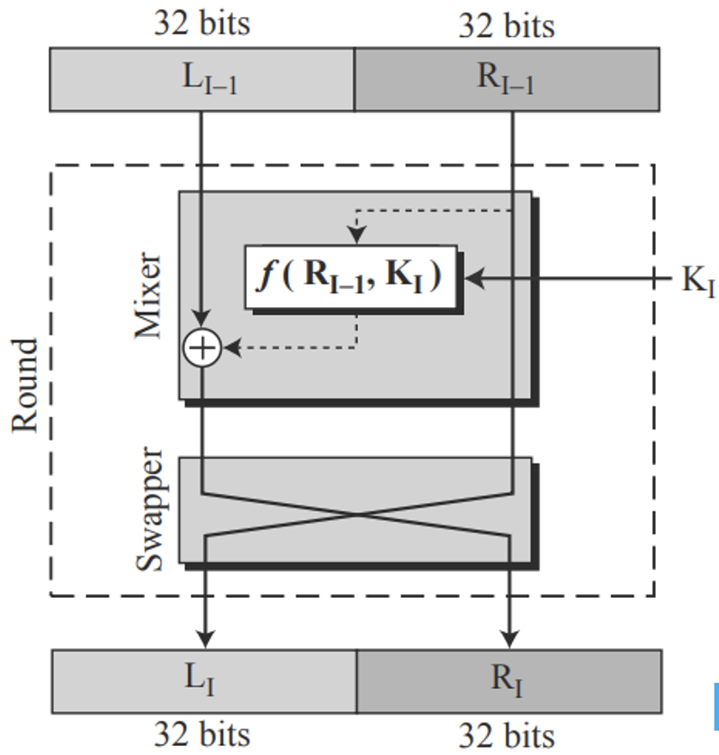
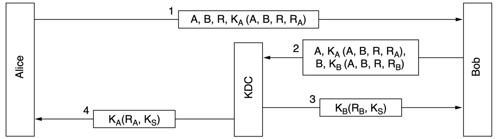

网络安全
约 2230 个字 8 张图片 预计阅读时间 7 分钟
计网直接在最后一章包含了一个《信安原》，不过鉴于是考选择题，这部分应该不需要掌握的太深。
网络安全基础
概念
网络安全需要保证：
- Confidentiality 机密
- Integrity 一致性
- Availablity 可用性
网络安全的基本原则有：Principle of 1. economy of mechanism(simplicity) 复杂的系统更容易出bug 1. fail-safe of defaults 用白名单而不是黑名单 2. complete mediation 访问资源的操作都应该被鉴权 3. least authority 只赋予最小权限 4. privilege separation 将系统分为多个最小权限单元 5. least common mechanism 减少公共权限的数目 6. open design 设计是公开的 7. psychological acceptability 原理容易理解
攻击
- 识别（Reconnaissance）
- port sacnning 端口扫描
- traceroute 路径探测
- 嗅探与监听(Sniffing and Snooping)
- 在开放介质（比如wifi）中嗅探，使用wireshark，工作在混杂模式(promiscuous mode)
- 在交换网络中不能直接收到发给其它主机的包，故需要欺骗(spoofing)
- mac cloning：攻击者声称自己有目标mac地址，从而使switch转发给自己
- mac flooding：攻击者用伪造大量以太网帧填充switch转发表，导致目标主机的帧只能被广播
- ARP poisoning：攻击者抢先回应ARP请求，从而污染源主机ARP缓存
- MITM：Man in the Middle
- 欺骗(spoofing)
- DNS spoofing：如果攻击者和受害者共享DNS服务器，攻击者可以主动污染DNS缓存，否则只能诱导受害者发起DNS解析请求
- TCP spoofing：
- 攻击者新建一个连接，假装是另一台电脑上的用户
- 攻击者在连接中在已有连接中注入数据，假装自己是会话双方的一方
- 中断(Disruption)
- Crashes：瘫痪目标机器
- Algorithmic complexity：用精心设计的数据让目标机器计算过载
- Flooding：用大量的请求使目标机器无法继续提供服务，比如SYN flooding
密码学
基本原则
- Kerckhoffs’ principle：all algorithms must be public;only the keys are secret
- 密码分析的基本变种：
- Ciphertext-only problem
- Known plaintext problem
- Chosen plaintext problem
- 加密原则：
- Redundancy：否则无法区分攻击者添加的信息
- Freshness：需要一些方法来防范重放攻击
基本手段
- 替换(substitution)加密，对字母做某些替换，比如凯撒密码，或者随机映射，破解需要进行词频分析
- 移位(trnaspostion)加密，只对字母进行重排，比如列转置(Columnar transposition)
- 一次性密码本(one-time-pad)：密钥必须与要加密的明文一样长，并且必须由真正的随机过程生成，且秘钥只只用一次
对称加密
- 使用同一个秘钥进行加密和解密
- 块加密：一次对n-bit的明文进行加密，产生n-bit密文
- 硬件实现：P-box for permutation，S-box for substitution
- Product cipher：通常使用至少20轮的排列和替换
DES
块加密，64bit的明文和密文，但是秘钥是56bit，16轮加密，实际每一轮使用的秘钥是48bit的，并且每一轮的秘钥都不相同

DES如今已经不再安全，引入了三重DES(Triple DES)，秘钥相当于有112位

AES
块大小为128bit（16 bytes = 4x4 array/state），秘钥长度有三种选择：
- 128 bits for 10 rounds
- 192 bits for 12 rounds
- 256 bits for 14 rounds
流程如下：
- Initial round key addition: AddRoundKey
- 9 rounds (assume 10 rounds needed):
- SubBytes：对每个state做映射
- ShiftRows：每个state循环左移，从上到下每一行左移位数依次为0，1，2，3
- MixColumns：每一列state与固定的多项式相乘
- AddRoundKey：每个state与round subkey进行异或运算
- Final round without MixColumns
加密模式
- EBC：将秘钥按照64bit分组（最后一个分组可能需要填充），每一组都使用相同的秘钥进行加密，容易收到密文替换攻击(ciphertext replacement attack)
- CBC：每个明文块在加密前先与上一个密文块进行异或，第一个明文块与初始化向量(IV,Initializetion Vector)异或，形成了一个链式结构，替换中间的块会导致其后块作废
- CF：仍然需要初始化向量，将初始化向量的左边前8位与明文前8位进行异或，得到第一个密文，将初始化向量左移8位，并将刚得到的密文填入后8位，重复这个流程，从而得到一个密码流。如果有一次加密出错，只会影响8B的内容
- SC：初始化向量只在第一步使用，反复加密IV得到不重复的 keystream，传输的明文中1bit的错误只会在解密的明文中产生1bit错误，重复使用相同的初始化向量和秘钥容易受到密钥流重用攻击(keystream reuse attack)
公钥加密算法
公钥加密算法需要满足三点：
- D(E(P)) = P
- 不能从D推断E
- E不能够通过明文攻破
计网里面只讲了RSA，RSA基于大素数分解：
- 选择两个足够大的素数p和q，则n=p*q，z=(p-1)*(q-1)
- 选择e和z互质，寻找d*e=1 mod z
- (e, n)是公钥，(d, n)是私钥，且C=P^e mod n，P=C^d mod n
数字签名
- 接收者可以确定发送者
- 发送者不能否认内容
-
接收者不能捏造收到的内容
-
Symmetric-Key Signatures：引入中央权威机构，它和每一对象之间都有共享的秘钥
- Public-Key Signatures：用自己的私钥加密，对方用公钥解密
- 消息摘要(Message Digests)：单向哈希函数能够把任意长的输入映射到固定长度
- SHA1 已经被攻破 160位输出
- SHA-2: 224, 256, 384, 512-bit
- SHA-3
交换公钥
公钥如果要在网络上传递的话，又要怎么保护公钥的安全呢？似乎陷入了死循环
- Certificates：CA(Certifacate Authority)为个人、公司和其他组织证明公钥
- X.509 Standard：将证书使用OSI ASN.1 编码，仅仅是个标准
- PKI(Public Key Infrastructure)：提供一种结构化组成的方式，为不同的文档和协议定义标准
- hierarchies of CAs：最顶层是root CA，CA下有若干RA(Regional Authorities)
- chain of trust/certification path：服务端同时提供自己的、RA的、逐层向上的CA的证书，客户端从下向上检查
- 世界范围内运行多个 root CA，现代浏览器预装了100多个 root CA的公钥（trust anchors）
认证
挑战响应协议
- 证明你是你，通常使用公钥加密来达成认证和建立session key
- 挑战响应协议(Challenge-response protocol)：一方发送随机数给另一方，另一方以某种方式返回随机数用于认证
使用挑战响应协议进行两次认证，这个版本也会受到反射攻击

shortened two-way authentication protocol，但它易受到反射攻击(reflection attack)

设计认证协议的通用规则：
- 发起方在接收方给出私密信息前需要先证明其身份
- 发起方和接收方使用不同的密钥进行验证
- 发送方和接收方需要从不同的题库中抽取挑战题
- 协议能够抵御涉及第二个并行会话的攻击，避免在其中一个会话中获取的信息被用于另一个会话。
HMAC
HMAC不会受到反射攻击

Diffie-Hellman key exchange
秘钥交换算法，不要和公钥密码算法混了
- A选择两个大数n和g，满足n和$\frac{n-1}{2} $都是质数，再选择一个大数x，将n, g, g^x mod n发给B
- B 收到后选择另一个大数y 将g^y mod n发给A
- A 计算出秘钥 \((g^y)^x\) mod n = \(g^{xy}\) mod n，B计算出秘钥 \((g^x)^y\) mod n = \(g^{xy}\) mod n
可能会收到中间人攻击
KDC
秘钥分发中心(Key Distribution Center)：一个可信方，与每个用户共享一个私有密钥

会受到重放攻击，解决方案是使用时间戳和计数
Needham-Schroeder authentication protocol:

Otway-Rees authentication protocol:

IP Secure
IP Secure 为了性能，使用symmetric-key cryptography；虽然位于IP层，但是是有连接的，被IPsec保护的连接被称作SA(Security Association)，它是单向的，所以实现双向通信需要两个SA
IPsec支持两种模式： - 传输模式(Transport Mode)：IPsec Header 被添加在IP Header之后，IP Header 中的Protocol字段会被修改，用于指示IPsec Header的存在，IPsec中有NextHeader字段指示后面是什么协议（通常是TCP） - 隧道模式(Tunnel Mode)：用一个新的带IPsec的IP Header包含普通的IP包，额外的开销比较大
IPsec主要包含两部分：
- ISAKMP(Internet Security Association and Key Manage Protocol)用于建立共享秘钥的框架
- 两种新的Header
- AH(Authentication Header)：提供一致性检查，反重放攻击，但不保密
- ESP(Encapsulating Security Payload)：只提供保密性
!!!error '写不动了，后面感觉也没那么重要了（'